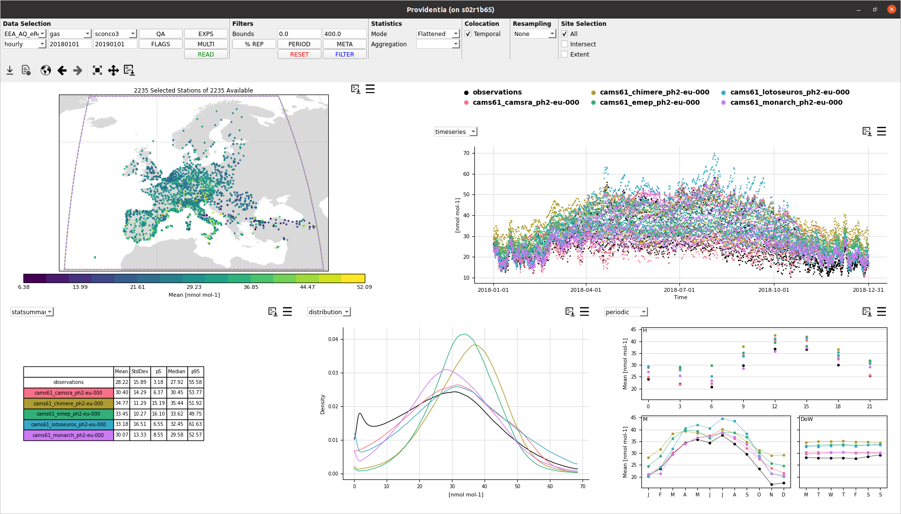
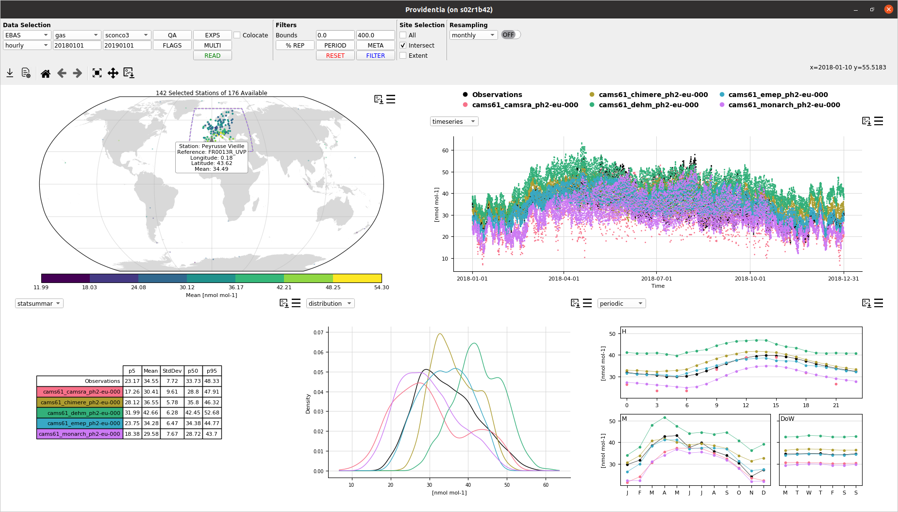
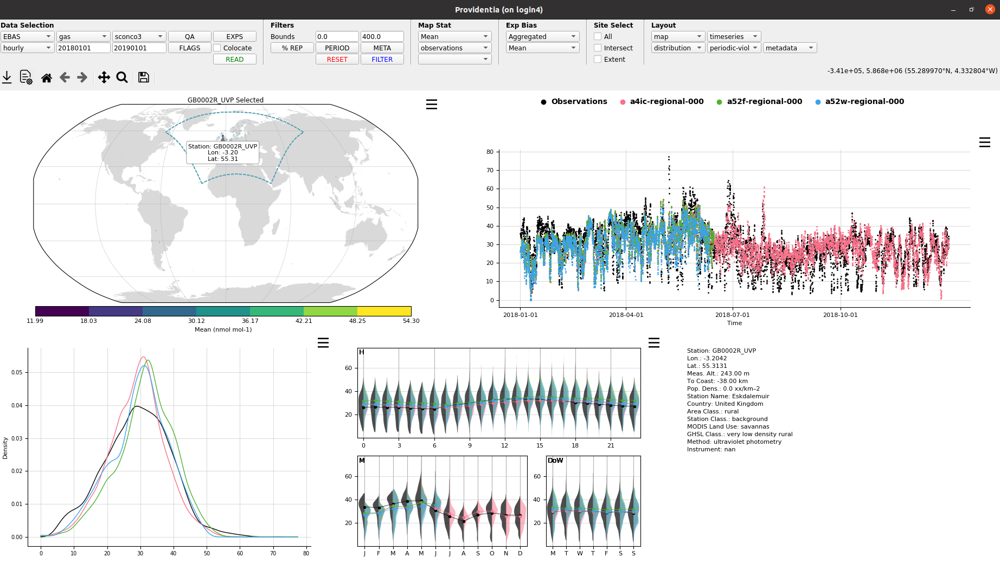
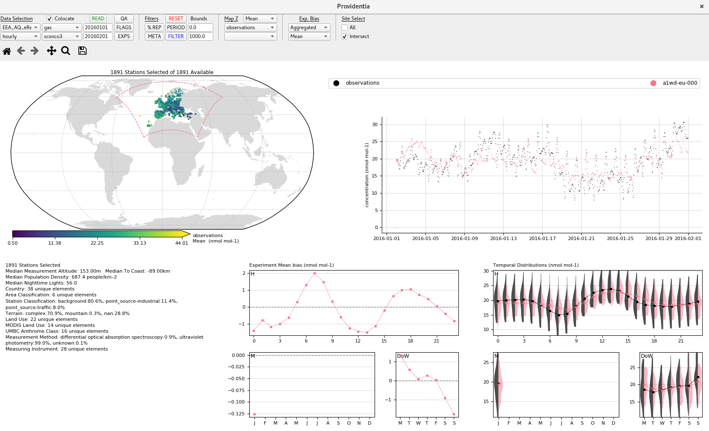

Evolution
¶
Versions 2.2.0 and 2.2.1 (2023)
¶

Version 2.1.0 (2023)
¶

Version 2.0.0 (2022)
¶

Version 1.3.0 (2020)
¶

Providentia
Navigation
Introduction
Tool setup
User guide
Other topics
Command line configuration
Data flags and QA names and codes
Representativity filters
Saved file formats
Create your own data network
Evolution
Versions 2.2.0 and 2.2.1 (2023)
Version 2.1.0 (2023)
Version 2.0.0 (2022)
Version 1.3.0 (2020)
Related Topics
Documentation overview
Other topics
Previous:
Create your own data network
Quick search